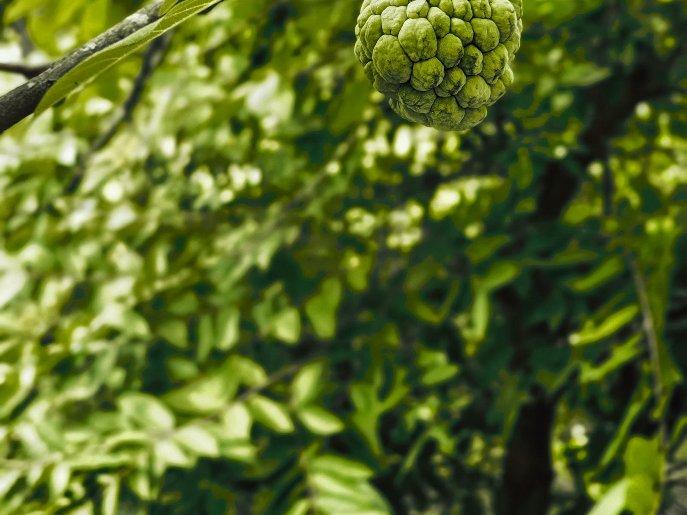

대만 석가 시즌, 일반석가랑 파인애플 석가 뭐가 다를까?
10월 타이둥 과일 가게에 석가가 쌓여 있다면 — 지금 먹을 품종과 겨울에 나올 품종이 달라요.
게시
"지금 대만에 가면 석가 먹을 수 있어요?" 10월은 일반석가(大目釋迦, 대목석가) 성수기예요. 파인애플 석가(鳳梨釋迦, 봉리석가)는 대략 12월부터 이듬해 4월에 나옵니다. 농업부 식농교육 자료와 산지 보도를 기준으로 제철, 맛, 대략 시세를 정리했어요.
01 · 일반석가랑 파인애플 석가, 뭐가 다를까?
| 일반석가(대목석가) | 파인애플 석가(봉리석가) | |
|---|---|---|
| 제철 | 대략 8~10월, 중추절 전후 피크 | 대략 12월~이듬해 4월 |
| 맛·식감 | 달고 부드러운 크림 느낌, 씨가 많아요 | 새콤달콤하고 Q한 식감, 씨가 적어요 |
| 주산지 | 타이둥(台東) 중심 | 거의 전부 타이둥(약 99%) |
02 · 10월에 가면 일반석가를 고르세요
지금(10월) 과일 가게와 노점에 나온 석가는 대체로 일반석가예요. 껍질이 울퉁불퉁하고, 손가락으로 눌러 살짝 들어가는 게 먹기 좋은 상태입니다. 단단하면 아직 덜 익은 거예요. 파인애플 석가는 이 시기의 주력이 아니고, 본격 시즌은 12월부터예요.
농업부 식농교육 플랫폼은 봉리석가 제철을 12월부터 이듬해 4월로 안내하고, 주산지를 타이둥으로 적고 있어요. 2026년 1월 중시(中時) 보도도 봉리석가 생산의 약 99%가 타이둥이라고 전합니다.

03 · 대략 시세, 그날 좌판에서 다시 확인하세요
석가 가격은 등급·매장마다 달라요. 아래는 공개된 도매 보도와 온라인 예시이고, 대략적인 폭으로만 보세요. 사러 가는 날 좌판 가격을 확인하는 게 맞습니다.
도매 보도 2025년 11월 공시(PTS) 보도는 석가 도매가가 kg당 대략 NT$80 전후이고, 전년 같은 시기보다 약 NT$20 높다고 전했어요.
농회 온라인 예시 타이둥현 농회 온라인몰에는 인증 대목석가 5근 박스(약 5~6개)가 특가 대략 NT$550에 올라온 예가 있어요.
과일 가게 소매 도매보다 높게 잡히는 편이에요. 1근(약 600g)당 대략 수십 NT$에서 백여 NT$ 사이로 보면 됩니다. 등급에 따라 폭이 커요.
그날 확인 시세는 하루에도 바뀔 수 있어요. 상자 무게와 개수를 보고, 개당이 아니라 근당으로 비교해 보세요.
04 · 먹는 법
물러야 먹어요 딱딱한 석가는 그대로 먹지 마세요. 손가락이 살짝 들어갈 만큼 말랑할 때 먹는 과일이에요.
덜 익으면 옆에 두기 단단하면 바나나나 사과 옆에 두고 후숙하세요. 농업부 식농 안내도 이렇게 익히라고 합니다.
냉장 타이밍 물러진 뒤에만 냉장하세요. 아직 단단할 때 냉장고에 넣지 않는 게 좋아요.
껍질은 안 먹어요 손으로 벌어 하얀 과육만 먹습니다. 씨는 많고, 파인애플 석가는 씨가 더 적어요.
"딱딱하면 두고, 손가락이 들어갈 만큼 물렀을 때 먹는다." — 농업부 식농 안내와 산지에서 석가를 사 먹는 요령을 요약했습니다.
석가 주산지인 타이둥의 식당은 타이둥 맛집 지도에서 볼 수 있어요. 타이베이에서 과일을 사려면 타이베이 과일 가게 모음을 참고하고, 다른 제철 과일은 과일 맛집에서도 이어서 볼 수 있습니다.
지도에서 타이둥 맛집을 찾아보세요
석가 주산지 타이둥의 식당을 지도에서 확인해보세요.